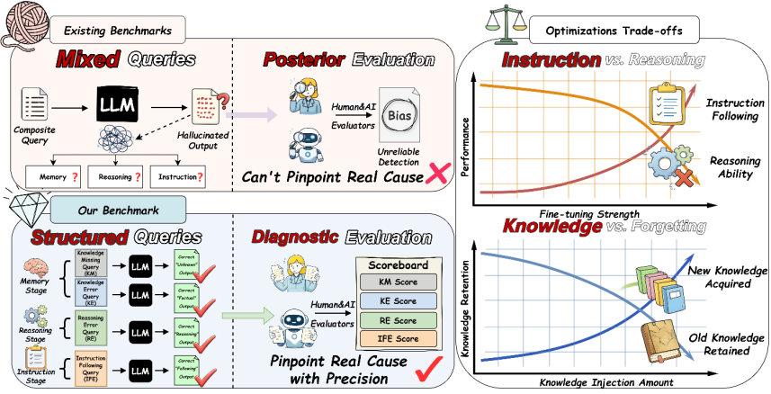
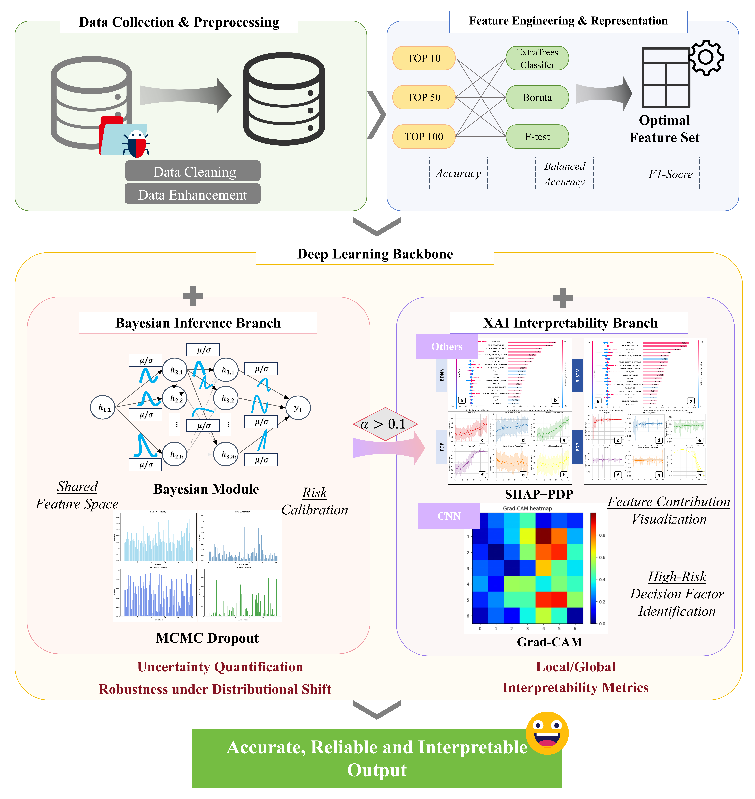
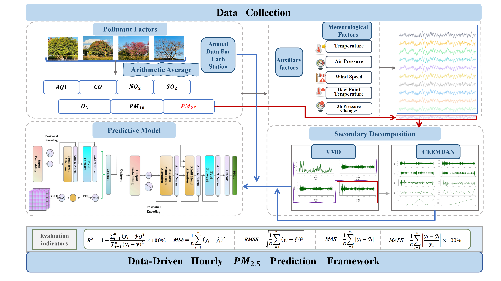
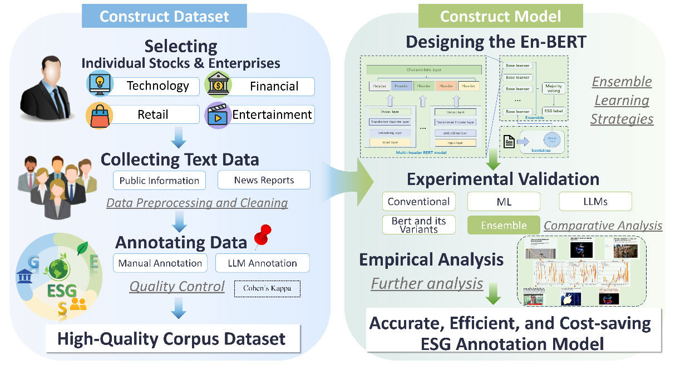
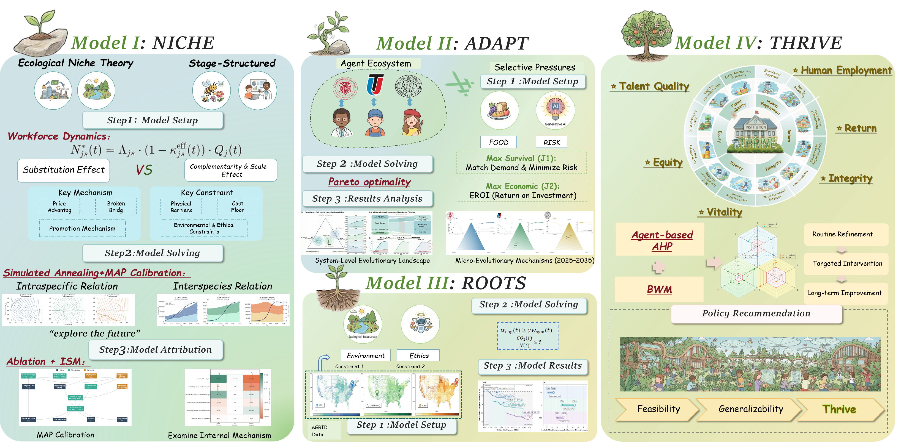
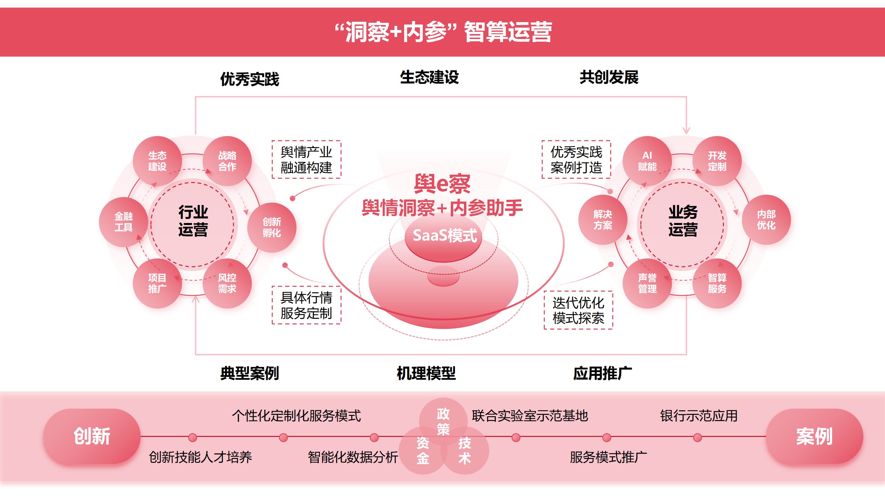
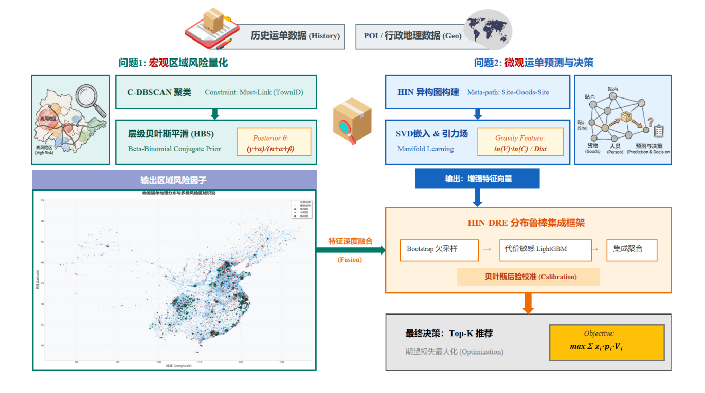

👋 About Me
I am Rainy (Yuran) Chen, an undergraduate in Financial Technology (FinTech) at Dongbei University of Finance and Economics (DUFE), where I rank 1/58 with a GPA of 4.11/5.00. My research lies at the intersection of trustworthy NLP, large language models, explainable AI, and AI for finance and security.
My recent work spans ACL Jul 2026, KDD Aug 2025, and Annals of Operations Research. I build diagnostic benchmarks for LLM hallucinations, uncertainty-aware anomaly detection frameworks, and robust forecasting models that emphasize interpretability, generalization, and real-world decision support.
I am actively seeking research collaboration, internships, and graduate opportunities. I work primarily with Python, SQL, machine learning, and data analysis pipelines, and I am happy to connect on topics related to trustworthy LLMs, explainable AI, and AI-driven decision systems.
🚀 Research
"I aim to build trustworthy AI systems that not only perform well, but also diagnose failure modes, quantify uncertainty, and support more reliable decision-making in language, finance, and complex real-world environments."
My work combines diagnostic evaluation, Bayesian deep learning, explainable AI, and hybrid neural architectures to study LLM reliability, anomaly detection, and robust forecasting under distribution shift.
Trustworthy LLM Evaluation & Hallucination Diagnosis
I design benchmarks and evaluation frameworks that move beyond coarse output scoring to diagnose where hallucinations originate. My ACL Jul 2026 work, PRISM, disentangles failures in memory, reasoning, and instruction following to support more actionable LLM analysis.
Uncertainty-Aware AI for Finance & Security
I develop interpretable and uncertainty-aware models for high-stakes settings. This includes plug-in feature screening and dual-branch Bayesian-XAI frameworks for anomaly detection, as well as trustworthy AI approaches for network security and risk-sensitive decision support.
Robust Forecasting & Cross-Domain Modeling
I study models that transfer across heterogeneous environments, including multi-scale CNN-Transformer hybrids for air pollution forecasting and competition-grade modeling pipelines that combine strong feature engineering with post-processing and ensemble design.
🔥 News
Selected recent updates on publications, competitions, and ongoing research milestones.
📄 Publications
* denotes equal contribution
Selected publications spanning trustworthy LLM evaluation, explainable anomaly detection, robust forecasting, and AI-driven economic analysis.
-2026-
-
Yuhe Wu, Guangyu Wang, Yuran Chen, Jiatong Zhang, Yutong Zhang, Yujie Chen, Jiaming Shang, Guang Zhang, Zhuang Liu.Annual Meeting of the Association for Computational Linguistics (ACL 2026 Main Conference), Jul 2026.PRISM introduces a stage-aware benchmark with 9,448 instances across 65 tasks to diagnose hallucinations by separating memory, reasoning, and instruction-following failures, enabling more precise analysis of why LLMs break.

-2025-
-
[AOR] Enhancing Financial Decision-Making under Cyber Threats: A Dual-Branch Framework Integrating Bayesian Deep Learning and Explainable AI. PDF ImageY. Wu, Y. Chen (*), Z. Liu, et al.Annals of Operations Research, 2025. (JCR Q1, ABS 3)A plug-in feature-screening and dual-branch Bayesian-XAI framework for cyber-threat-aware financial decision-making, improving anomaly detection accuracy to 98.08% while quantifying uncertainty and providing interpretable explanations.

-
[KDD'25] PolluVCCT: Multi-Scale Hybrid Learning for Robust Air Pollution Forecasting Across Diverse Climate Zones. ImageY. Wu, Y. Chen (*), X. Su, et al.SIGKDD, Aug 2025.A multi-scale hybrid CNN-Transformer framework for robust air pollution forecasting across diverse climate zones, designed to strengthen cross-region transferability and generalization.

-
[CCFAI'25] POLARIS: A Multi-Dimensional Evaluation Benchmark for Explicit and Implicit Bias in Large Language Models.Z. Liu, Y. Chen (*), Y. Wu, J. Zhang.CCFAI (CCF-A), 2025. Chinese-language publication.
-
[JEIT] ReXNet: Trustworthy Artificial Intelligence for Space–Air–Ground Integrated Network Security.Z. Liu, Y. Chen, J. Zhang, Y. Jiang.Journal of Electronics and Information Technology, 2025 (China Core). Chinese-language publication.
-
[Workshop] Bridging ESG Text Analysis and Global Value Chain Resilience Through AI-Driven Innovation. ImageZ. Liu, Y. Wu, Y. Chen, D. Zheng, et al.1st China Digital Finance Frontier Symposium, Sep 2025.Explores how AI-driven ESG text analysis can support resilience assessment and strategic understanding of global value chains.

-
[JCST] Integration of Communication, Sensing, and Computing: Key Technologies, Challenges and Trends.Z. Liu, Y. Wu, Y. Chen, et al.Journal of Computer Science and Exploration, 2025 (China Core). Chinese-language publication.
-2024-
-
[JCBD] Graph Lifelong Learning: A Survey.Z. Liu, Z. Dong, Y. Dong, et al.Journal of Computer Research and Development, 2024 (CCF-A, China Core). Chinese-language publication.
🏆 Honors & Awards
Selected academic honors and university-level distinctions.
First-Class Scholarship (Top 5%)
Dongbei University of Finance and Economics
Merit Student, Outstanding League Member
DUFE
Challenge Cup National Bronze
National Undergraduate Innovation Competition
🏅 Competitions
Competition projects where I developed end-to-end modeling pipelines, interpretable analyses, and deployment-oriented solutions.
Mathematical Contest in Modeling (MCM/ICM) · Meritorious Winner
Developed a structured multi-model solution that integrates ecological niche theory, agent-based optimization, and policy recommendation analysis, and presented the full workflow through an interpretable visual modeling pipeline.

Bank Sentiment Insight (Yu e Cha) · ICBC Cup National Top 100
Led bank outreach and data partnerships, built models for sentiment insight with anonymized data; oversaw quality control and project delivery.

MathorCup National First Prize · Big Data Modeling Challenge
C-DBSCAN + Bayesian regional risk model and HIN-DRE heterogeneous ensemble for high-risk shipment identification; AUC 0.8926, covering 65.3% of expected risk and improving resource allocation.

MABe Mouse Social Behavior Recognition · Kaggle Silver Medal
Deep feature engineering + XGBoost behavior recognition; designed multi-view interaction and temporal features with data cleaning and post-processing for strong segment-level F1 across labs.
🤝 Collaboration & Opportunities
I am open to research collaboration, internships, and graduate study opportunities in trustworthy LLMs, NLP, explainable AI, and AI for finance. If our interests align, I would be very happy to connect.
🎓 Education
B.S. in Financial Technology (Fintech)
Dongbei University of Finance and Economics (DUFE)
📬 Contact
Email: yuranchen06@gmail.com
Affiliation: Dongbei University of Finance & Economics (DUFE)
Google Scholar, GitHub, and CV links will be added once the public profiles and final documents are ready.